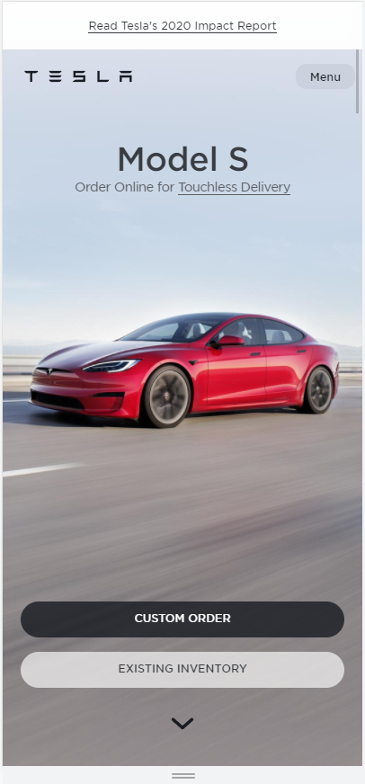

Visual Hierarchy
This sight shows off visual Hierarchy really well.They have a nav bar at the top and is distinct.
Then there is their main advertisement Disney plus and then transitions into more articles on disney
products.
White Space and Clean Design

The Tesla Webpage is what you would expect. Clean just like their cars.
They use the white space to only have the most import information shown on the screen.
It directs your eyes to the key parts of the page and imprints on you the layout for further pages.
Rule of Thirds
The doordash webpage knows the rule of thirds well.
Dividing views into threes usually what the product is, the cost, and to purchase it.
Even the navigation bar is in thirds.
A search, a menu bar and your cart these are probably the most uses components in the page and alway user to
navigate smoothly.